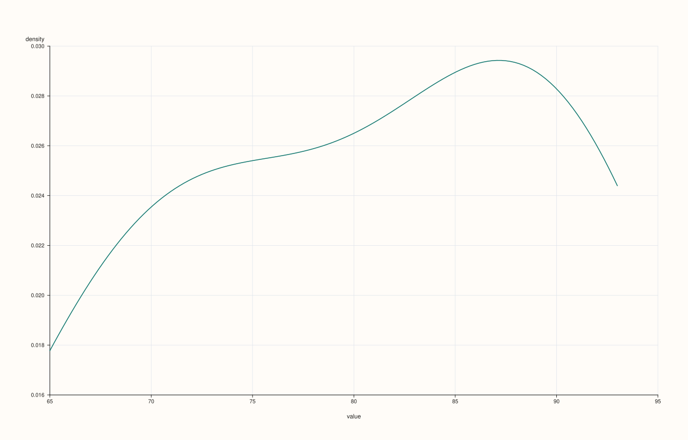
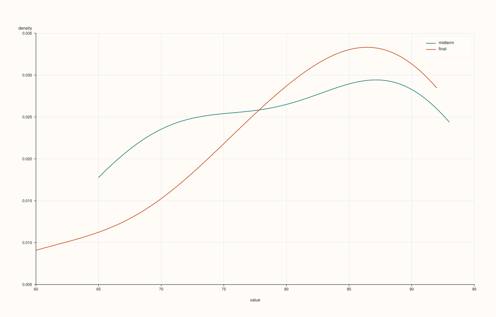
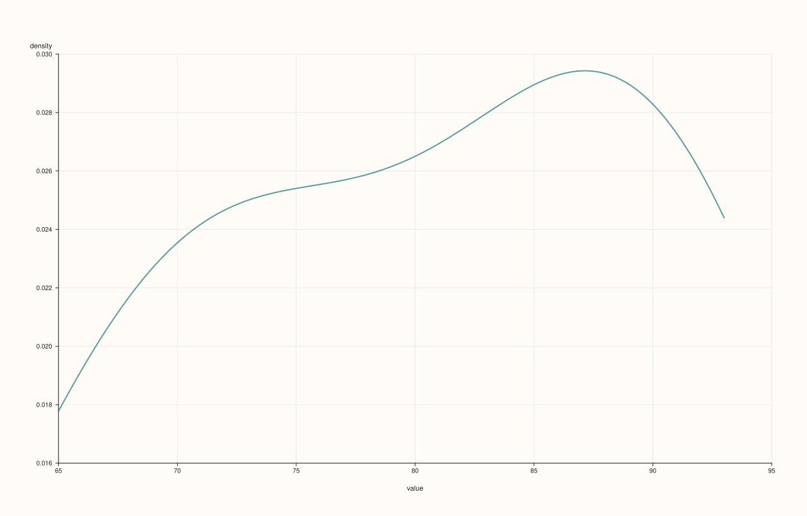
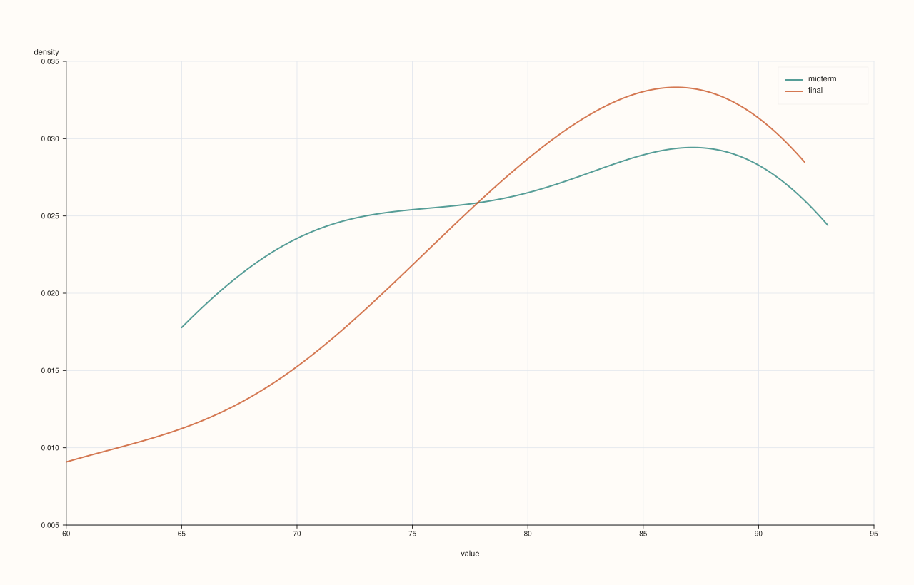

DataFramePlotAccessor::density¶
Back to DataFramePlotAccessor API Reference
Signatures¶
DataFramePlotAccessor::density(std::string_view feature, std::int64_t points = 128) const -> pluss::pl::Studio
DataFramePlotAccessor::density(std::string_view feature, const DensityPlotOptions& options) const -> pluss::pl::Studio
DataFramePlotAccessor::density(pluss::msharp::RangeView::Of<std::string_view> features, std::int64_t points = 128) const -> pluss::pl::Studio
DataFramePlotAccessor::density(pluss::msharp::RangeView::Of<std::string_view> features, const DensityPlotOptions& options) const -> pluss::pl::Studio
DataFramePlotAccessor::density(std::initializer_list<std::string_view> features, std::int64_t points = 128) const -> pluss::pl::Studio
DataFramePlotAccessor::density(std::initializer_list<std::string_view> features, const DensityPlotOptions& options) const -> pluss::pl::Studio
What It Does¶
Draws a kernel-density estimate (a smoothed distribution curve) for one or more numeric
features. Unlike hist(), density() always overlays every requested
feature’s curve on a single shared pane, regardless of how many features are requested —
there is no mosaic-grid mode here. A legend is shown automatically whenever more than one
feature is requested.
Follows the same numeric-feature validation as box() for its features
parameter, though density() has no empty-list “infer everything” shorthand of its own —
every overload requires at least one named feature.
Parameters¶
feature (std::string_view)
A single numeric feature to draw as one density curve.
features (RangeView<std::string_view> or std::initializer_list<std::string_view>)
Several numeric features, each drawn as its own curve on the shared pane.
points (std::int64_t, default 128)
The number of evaluation points used to draw each curve. Internally clamped to a
minimum of 16 regardless of what’s passed — density(feature, 1) still draws a
16-point curve, not a degenerate one-point line.
options (DensityPlotOptions)
cpp struct DensityPlotOptions { std::int64_t points{128}; double alpha{1.0}; double line_width{1.5}; };
Returns¶
pluss::pl::Studio
A figure with one pane containing one kernel-density curve per requested feature,
x-axis labeled "value", y-axis labeled "density".
Examples¶
Example 1. A single feature, default point count.
using namespace pluss::table;
auto exams = DataFrame({
{"midterm", Thread(pluss::make_series({71.0, 82.0, 93.0, 65.0, 88.0, 74.0, 90.0}))},
{"final", Thread(pluss::make_series({75.0, 85.0, 91.0, 60.0, 92.0, 78.0, 88.0}))},
});
auto chart = exams.plot().density("midterm");
chart.show();

Example 2. A single feature with an explicit point count.
auto chart = exams.plot().density("midterm", 256);
chart.show();
Higher points gives a smoother-looking curve at higher compute cost; lower points
(clamped to a minimum of 16) gives a coarser one.

Example 3. Two features, overlaid on the same pane, via initializer_list.
auto chart = exams.plot().density({"midterm", "final"});
chart.save_pdf("both_density.pdf");
Both curves share one pane and one set of axes; a legend labeled "midterm"/"final"
appears automatically since more than one feature was requested — contrast
hist(), which would instead place these on two separate panes.

Example 4. The same multi-feature call via a reusable RangeView.
std::vector<std::string_view> names{"midterm", "final"};
auto chart = exams.plot().density(pluss::msharp::RangeView::Of<std::string_view>(names));

Example 5. An explicit DensityPlotOptions.
DensityPlotOptions density_options;
density_options.points = 200;
density_options.alpha = 0.7;
density_options.line_width = 2.0;
auto chart = exams.plot().density("midterm", density_options);
chart.show();

Example 6. Multiple features with an explicit options object.
auto chart = exams.plot().density({"midterm", "final"}, density_options);

Notes¶
Always overlays every requested feature on one shared pane — never a mosaic, unlike
hist().pointsis clamped to a minimum of16regardless of what’s requested.No empty-list “infer everything” shorthand — at least one feature must be named explicitly on every overload.
Returns a
pluss::pl::Studio— seeline()’s important callout for how to view or save the result.
See Also¶
DataFramePlotAccessor::hist: binned frequency counts instead of a smoothed curve, with its mosaic-grid layout for multiple features.DataFramePlotAccessor::box/violin: other distribution-shape summaries.